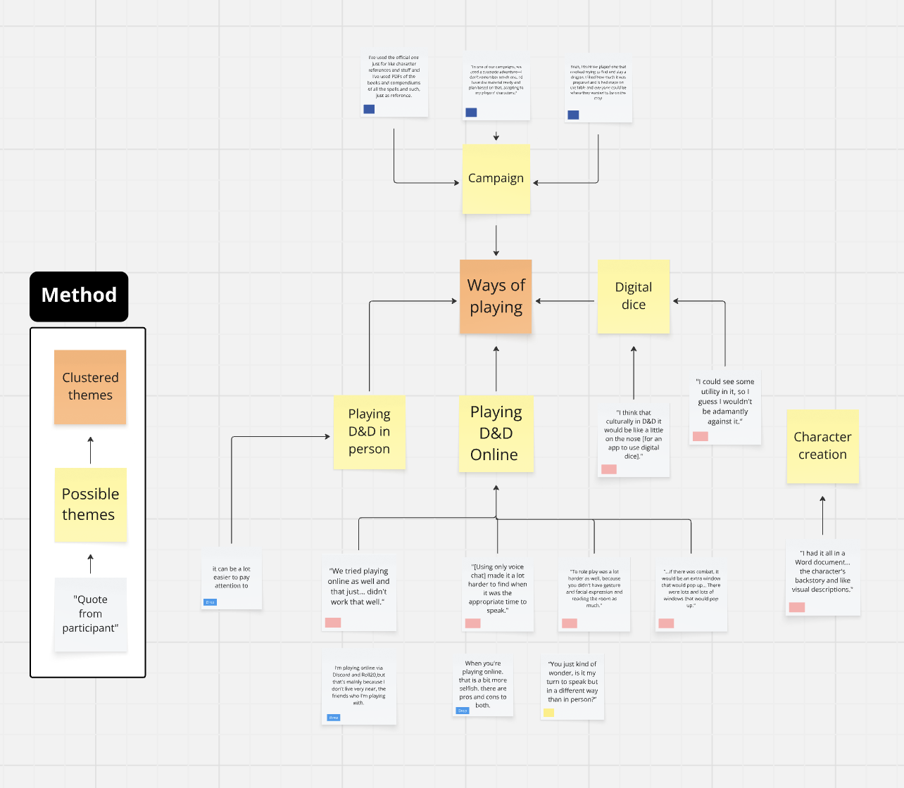
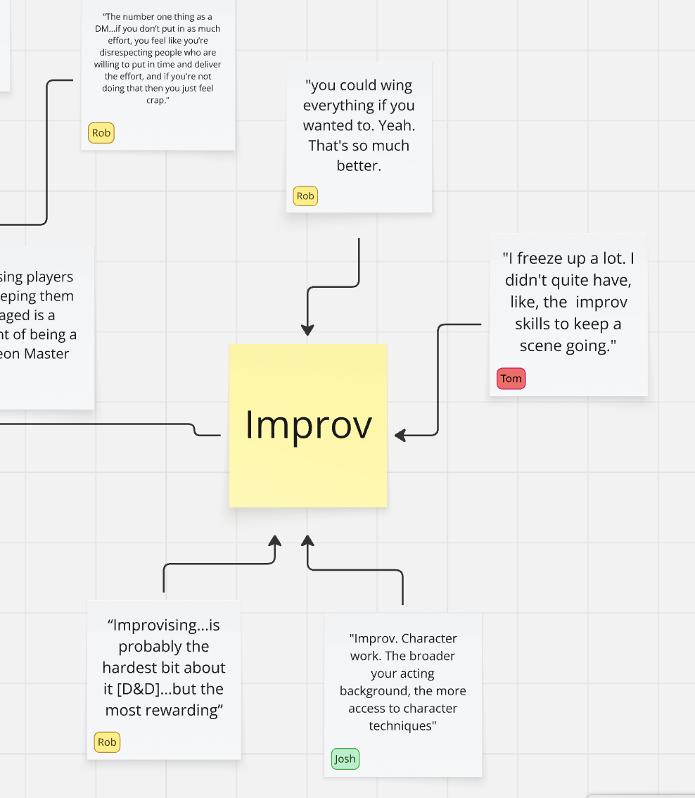
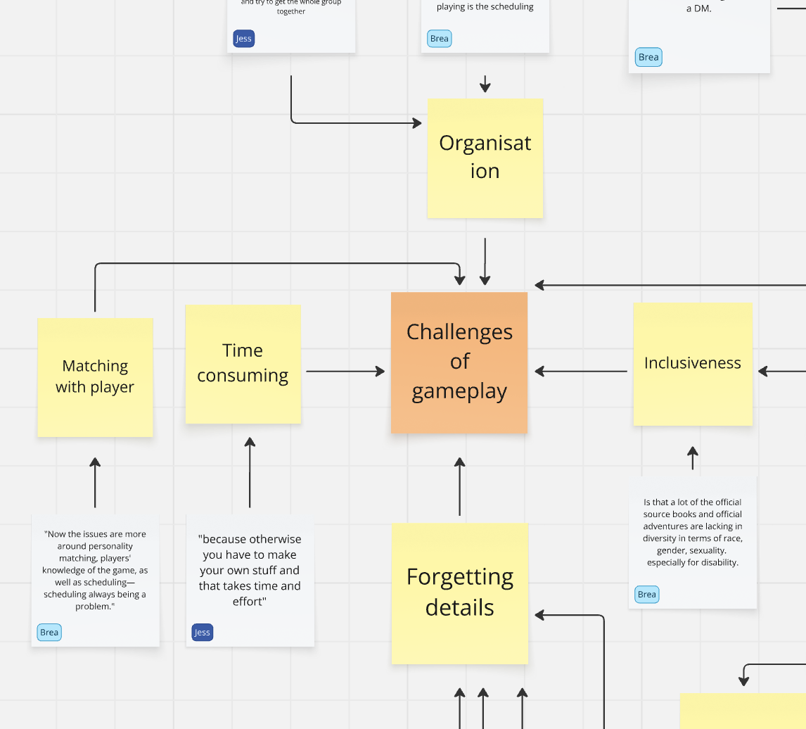
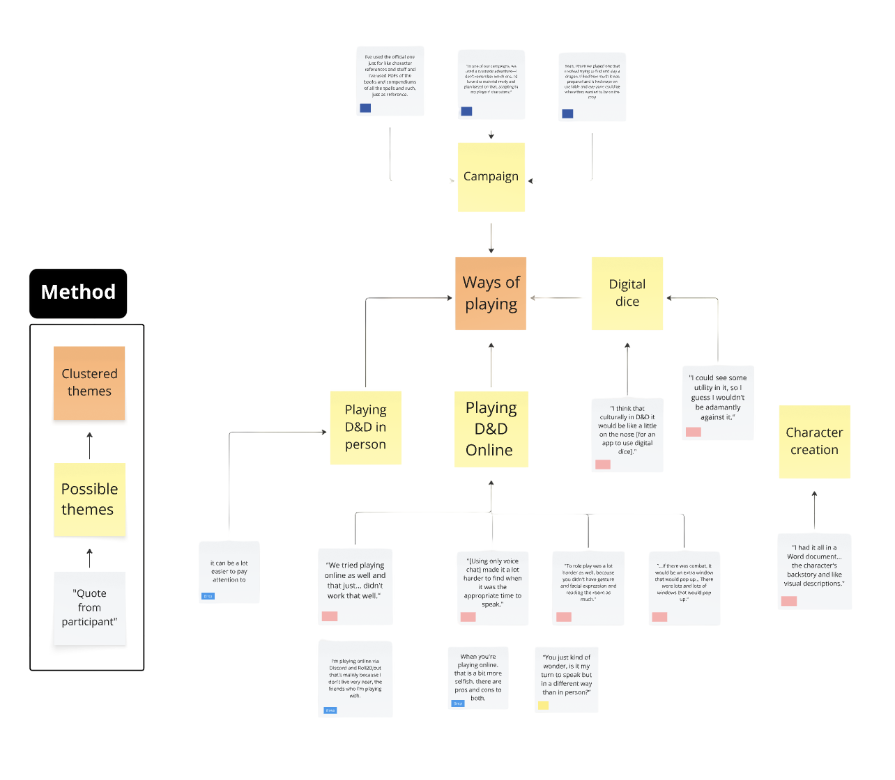
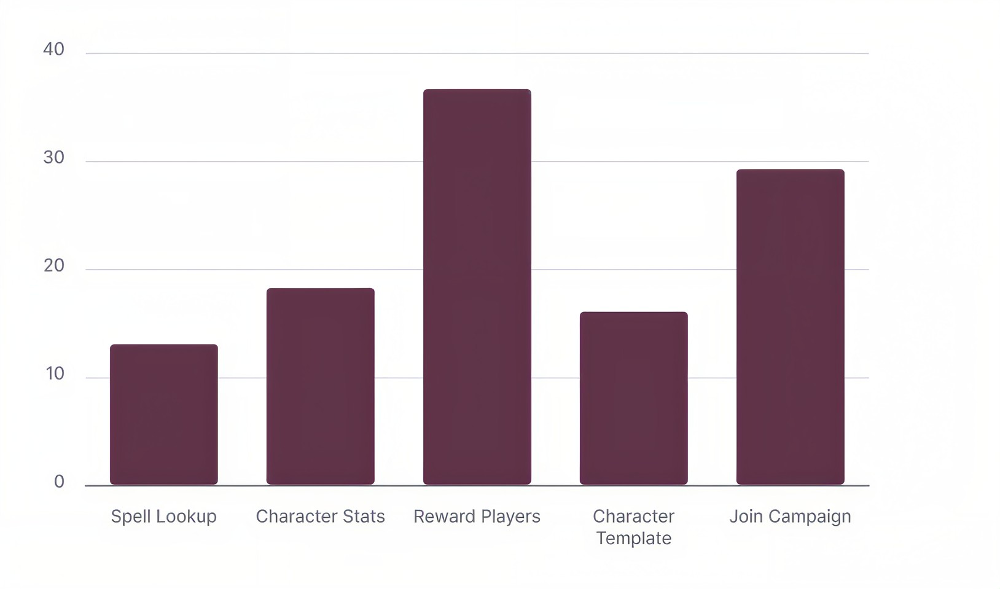
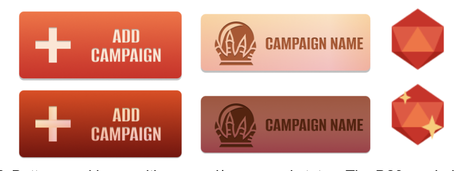
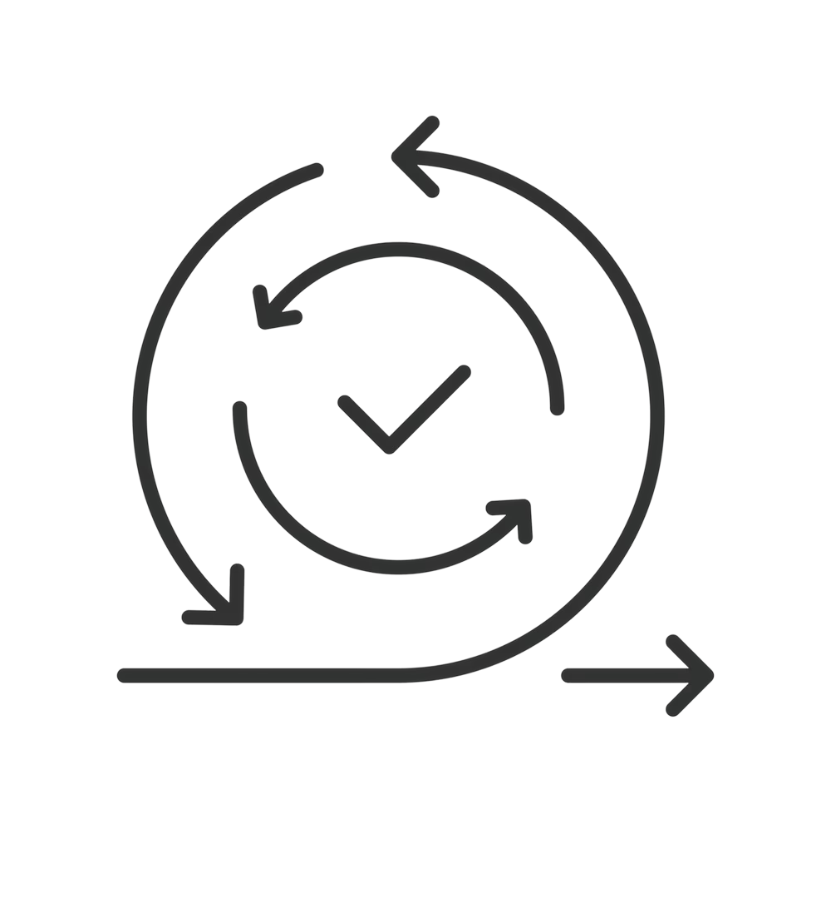

01 — Rule Lookup
Finding and interpreting spell or rule information

Simplifying complex D&D gameplay and preserving its social and creative experience.
A mobile companion app that brings together rule lookup, character information, and campaign management to support a smoother tabletop gaming experience.


01 / THE CHALLENGE

Finding and interpreting spell or rule information
Keeping track of stats and character details
Managing players and distributing rewards
02 / USER RESEARCH
6 user interviews
Across different experience levels and play styles
Players value shared storytelling and social interaction.
Complex spells and mechanics disrupt the pace of play.
Players want simpler tools without losing customisation.




03 / DEFINED OPPORTUNITIES
Understand spells quickly and create characters easily.
Visual Spell Lookup + Character Templates
Access party information without disrupting gameplay.
Party Manager + Character Sheets
Greater flexibility for custom characters and spells.
Custom Content Support (Future Scope)
04 / DESIGN SOLUTIONS


Find and understand spell information without navigating lengthy rule descriptions.


Give DMs a central place to view character information and manage player rewards.


Help players join existing campaigns and get started with character templates.
05 / TESTING & ITERATION
5 Participants
5 Tasks
80% rated very useful

Users had difficulty distinguishing the Dungeon Master role and identifying the Add Campaign action.
We made the DM status more prominent, reduced the visual weight of campaign cards, and highlighted Add Campaign as a distinct primary action.

Users inconsistently used the radio buttons and quantity controls when assigning rewards.
We removed the redundant radio buttons, allowing reward quantities to determine which players receive rewards.

06 / REFLECTION
User testing helped us identify unclear interactions and refine the interface to better match players’ expectations.

This project taught me that improving efficiency is understanding what users value and designing tools that support those experiences.

Usability testing revealed problems that were easy to overlook during prototyping. In future projects, I would test key interactions earlier and refine them before investing heavily in visual design.